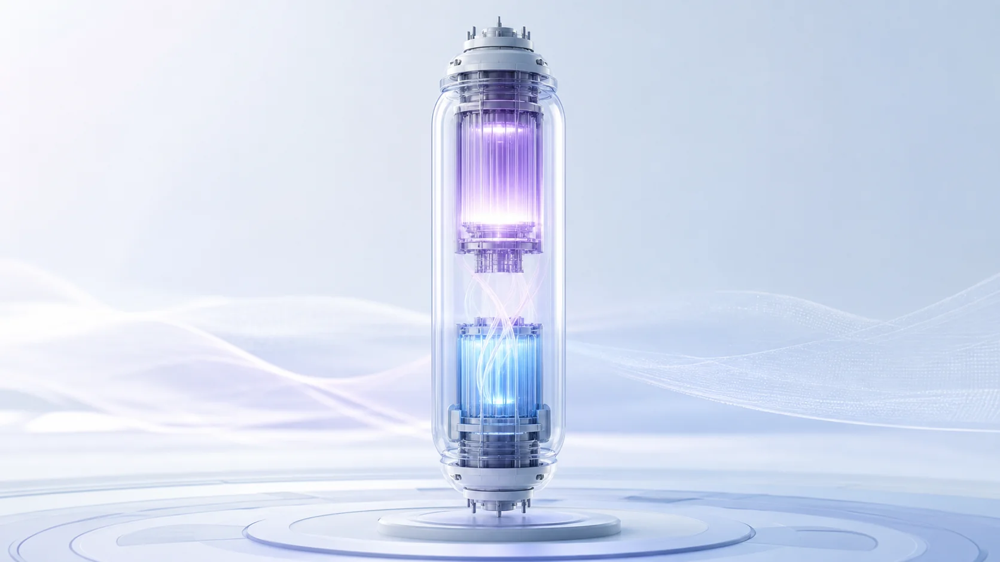
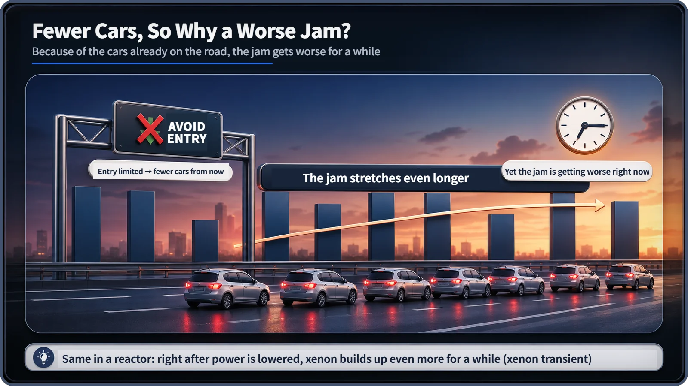
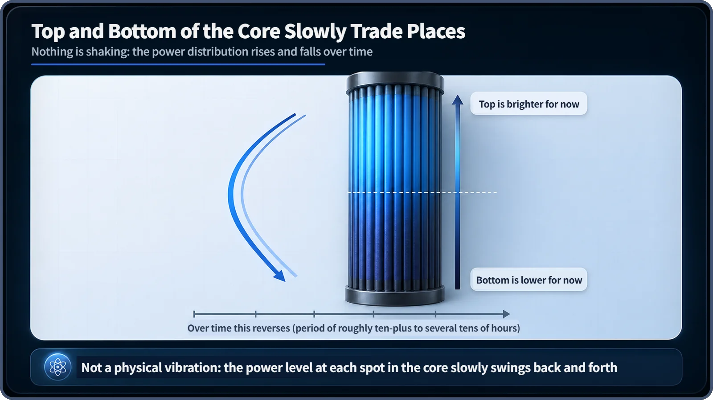

Neutron Physics & the Core · 098
Turned It Down, So Why Is It Jammed? — How Xenon and Samarium Eat Neutrons
Lower the power and xenon-135 piles up for hours before it clears, like a traffic jam from cars already on the road, while stable samarium-149 just quietly accumulates.

Xenon-135 and samarium-149 are fission products that absorb neutrons unusually well. Xenon-135 keeps arriving from the decay of iodine-135 already in the core, so after power is lowered it builds up for hours before it clears; samarium-149 is stable, so it simply accumulates. Both are normal by-products that reactor designers and operators calculate and manage.
Turned it down, so why is it jammed?
You suddenly lower a reactor's power. Fewer neutrons, fewer fissions; everything should settle down... yet a few hours later the core can end up in a state where it's hard to bring the power back up. The answer lies in two substances quietly absorbing neutrons out of sight: xenon and samarium.
You've already seen the answer at rush hour
Picture a highway on-ramp. A sign lights up: "Congestion ahead — avoid entering." Far fewer new cars come on, yet the road gets more jammed, because the cars already on it are still crawling along. Cutting new arrivals is one thing; clearing the cars already there takes time.
Inside a reactor, lowering power is like closing the on-ramp. But the core already has "cars on the road": iodine-135. Whatever the power, this iodine keeps decaying on its own schedule, steadily producing xenon-135, a superb neutron absorber. So right after power is lowered, xenon actually builds up further.

Xenon-135: one of the greatest neutron eaters known
Xenon-135 is a fission product. A little is made directly by fission, but most arrives by this chain:
tellurium-135 (about 19 s) → iodine-135 (about 6.6 h) → xenon-135 (about 9.2 h) → cesium-135 (effectively stable)
Its absorption cross-section (a measure of how readily it catches neutrons) is around 2.6 million barns, among the largest of any known nuclide; ordinary fuel and structural materials are at most a few hundred barns. Xenon-135 leaves in two ways: by decaying into cesium-135 (half-life about 9.2 hours) or by absorbing a neutron and becoming xenon-136 ("burnout").
Change in xenon-135 = (made by iodine-135 decay) − (lost by its own decay) − (lost by absorbing neutrons)
At steady power the three terms balance and xenon settles at an equilibrium level after roughly 40 to 50 hours.
Why turning down makes it pile up: the xenon transient
Lower the power and the neutron flux drops, so the last term, "lost by absorbing neutrons," falls sharply. But the iodine-135 already in the core keeps decaying with its 6.6-hour half-life and keeps supplying xenon. Removal slows while production holds, so xenon rises for a while. This is the xenon transient, called the iodine pit after a shutdown.
Typically xenon peaks about 8 to 11 hours after a power reduction or shutdown, then slowly falls. Right after a shutdown, the reactivity margin can therefore be tight and a restart temporarily harder. Real operating plans include procedures and margins for this period.
A quiet seesaw inside the core
In a large core whose top and bottom don't influence each other much, a brief power rise in one region burns off xenon there faster, so its power climbs further. But that region is also making more iodine, so hours later more xenon piles up there, its power drops, and the opposite side rises. The power distribution slowly trades places back and forth: the spatial xenon oscillation, with a period on the order of ten-plus to several tens of hours.

Nothing physically shakes or moves; it's an invisible rise and fall in the power level (neutron flux) of each region. Large reactors constantly monitor the top-to-bottom power distribution with in-core and ex-core instruments and actively suppress the oscillation by adjusting control rods when needed.
Samarium-149: a jam that only keeps building
Samarium-149 is made by neodymium-149 → promethium-149 (about 53 h) → samarium-149 (stable). Its cross-section is around 40,000 barns, roughly one-sixtieth of xenon-135's but still enormous. Being stable, it never decays; its only exit is absorbing a neutron and becoming samarium-150. During operation it builds until production and absorption balance, after roughly 500 to 600 hours (around three weeks).
At shutdown, samarium's only way out disappears, while leftover promethium-149 keeps decaying into more samarium. So samarium keeps rising for a while, and the extra stays put until a neutron flux returns.
| Xenon-135 | Samarium-149 | |
|---|---|---|
| Made from | iodine-135 (half-life about 6.6 h) | promethium-149 (half-life about 53 h) |
| Absorption cross-section | about 2.6 million barns | around 40,000 barns |
| Removed by | own decay (about 9.2 h) + neutron absorption | neutron absorption only (stable) |
| Equilibrium at steady power | roughly 40–50 hours | roughly 500–600 hours |
| After shutdown | peaks after about 8–11 h, then declines | rises for a while, then stays |
Two common misconceptions
First, xenon and samarium are not impurities or equipment faults. They always form when fission happens; they simply absorb neutrons so well that they must be calculated and managed separately. Second, spatial xenon oscillation is not the core physically shaking, just a slow rise and fall of power by location.
Why this matters
In operation, procedures for raising power after a reduction or shutdown account in advance for the reactivity lost to the xenon transient, and large cores monitor and adjust the axial power distribution. In design, the reactivity eaten by equilibrium xenon and samarium, the loss from the maximum post-shutdown xenon transient, and oscillation damping are calculated ahead of time to leave ample margin in control rods and boron concentration. Xenon and samarium aren't hazards in themselves; knowing and managing them precisely is a basic condition for safe, planned operation.